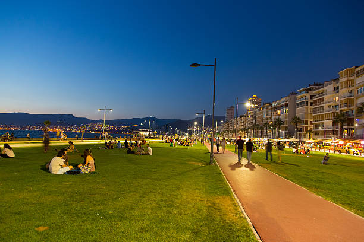
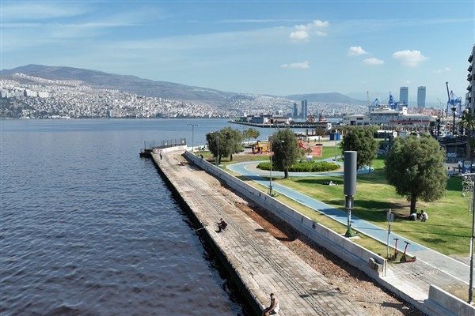
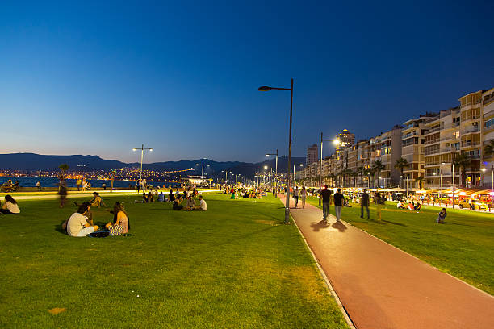
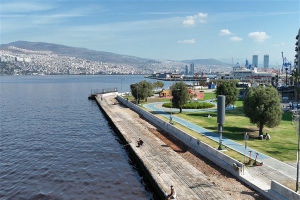

İzmir Hakkında
İzmir, Ege'nin incisi olarak bilinen, tarihi ve doğal güzellikleriyle ünlü bir şehirdir. Modern yaşamı ve zengin tarihi geçmişiyle dikkat çeker. İzmir, antik çağlardan günümüze kadar birçok medeniyete ev sahipliği yapmış, bu da ona zengin bir kültürel miras bırakmıştır. Aynı zamanda sıcak iklimi ve sahil kenarındaki plajlarıyla popüler bir tatil beldesidir. İzmir, mutfağı, gece hayatı ve eğlence seçenekleriyle de turistlerin ilgisini çeker.
İzmir'de Ziyaret Edilmesi Gereken Başlıca Yerler:
- Efes Antik Kenti: Dünyanın yedi harikasından biri olan Artemis Tapınağı'na ev sahipliği yapmış olan bu antik kent, Roma İmparatorluğu'nun en önemli şehirlerinden biri olmuştur. Efsanevi yapıları ve kalıntılarıyla etkileyici bir deneyim sunar.
- Konak Meydanı ve Saat Kulesi: İzmir'in en bilinen simgelerinden biri olan Saat Kulesi, 1901 yılında inşa edilmiştir ve Konak Meydanı'nın kalbinde yer alır. Meydan, şehri keşfetmek isteyenler için harika bir başlangıç noktasıdır.
- Çeşme ve Alaçatı: Çeşme, güzel plajları ve sıcak iklimiyle popüler bir tatil beldesidir. Alaçatı ise taş sokakları, şirin restoranları ve rüzgar sörfü ile ünlüdür. Bu bölgeler, Ege'nin mavi sularında dinlenmek ve huzur bulmak isteyenler için mükemmeldir.
- Kadifekale: İzmir'in en yüksek noktalarından birine kurulu olan bu kale, şehri yüksekten izleyebileceğiniz bir yerdir. Ayrıca kalenin çevresi, pek çok tarihi yapıya ve yeşil alanlara da ev sahipliği yapmaktadır.